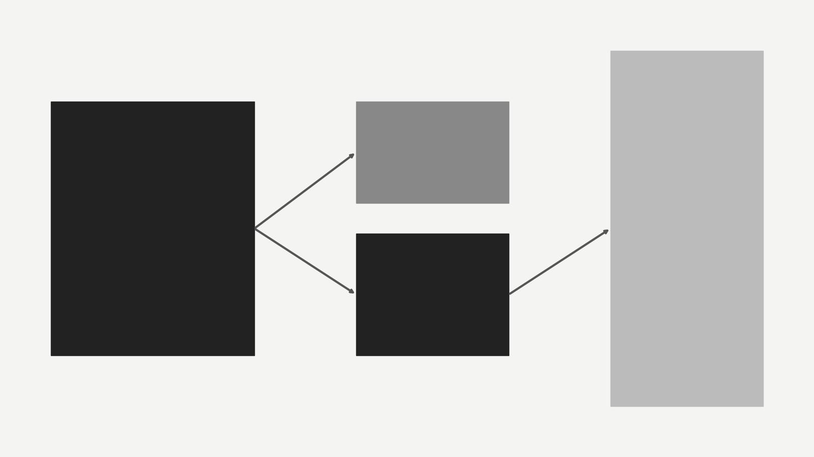
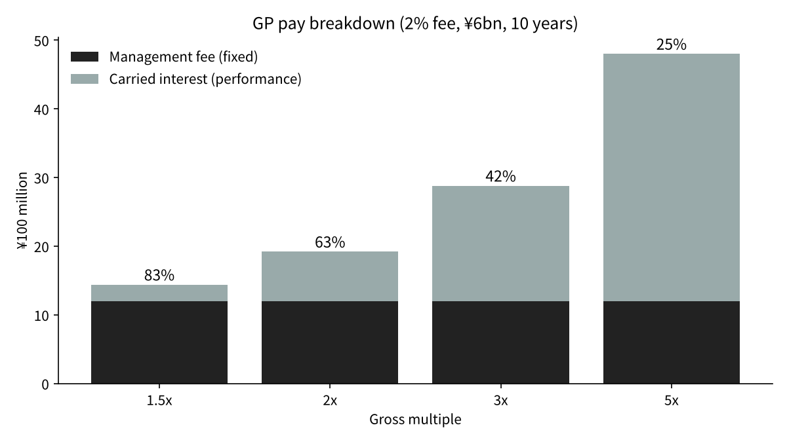
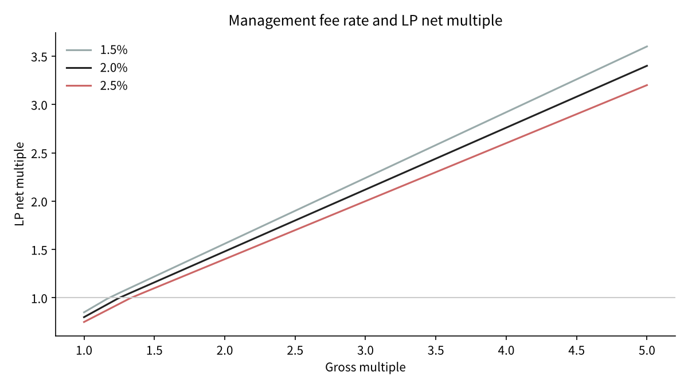

In a ¥6 billion VC fund, how much of the manager's pay depends on performance? Testing ANOBAKA, Japan's METI model LPA and the Metrick–Yasuda paper
ANOBAKA, a seed-stage venture capital (VC) firm in Japan, has launched its fourth fund at about ¥6 billion ($37.73 million) and drawn attention for adding a mechanism that refunds part of its management fee.
VC funds are often said to charge a "2% management fee and 20% carried interest", and the manager collects the management fee whether the fund makes money or not.
The question here: in a ¥6 billion fund, how much of what the manager receives is fixed regardless of performance, and how closely does the investors' (LPs') take-home follow performance?
- In a ¥6 billion, 10-year fund with a 2% fee, about 63% of the GP's pay at a 2x gross result is a fixed fee unrelated to performance.
- LPs need 1.25x gross just to recover capital. Each 0.5-point rise in the fee cuts the invested amount by ¥300 million.
- A fee refund moves the fixed part closer to performance, but choosing the manager still decides the take-home.

The question and background
First, the terms. In Japan, VC funds are usually set up as investment limited partnerships (LPS). The side that runs the fund and bears unlimited liability is the general partner (GP); the side that provides money with limited liability is the limited partner (LP).
GP pay has two main parts. The management fee is a fixed fee charged every year as a percentage of committed capital. Carried interest is a share of the fund's profits and moves with performance.
Japan's Ministry of Economy, Trade and Industry (METI) published a template for LPS agreements, the "Model LPA with Commentary (2025 edition)", in June 2025. The template does not fix fee rates; each fund sets them in its own contract.
US research reports "2% management fee, 20% carried interest, 1% GP commitment" as the typical structure. Actual contracts vary widely. Larger funds sometimes lower the rate, and some switch the fee base from committed capital to invested capital after the investment period.
ANOBAKA is known as a seed-focused VC that makes first checks of about ¥10 million to ¥50 million per company. "Seed" means the stage right after a company is founded, when revenue is still small. At this stage most investments fail, and a few large successes are said to decide a fund's overall result.
Data and method
I assume a ¥6 billion, 10-year fund and run a simple calculation. There are four assumptions.
First, the management fee is charged on the ¥6 billion commitment every year for 10 years. Second, everything left after the fee is invested. Third, carried interest is 20% of what is returned to LPs above the ¥6 billion commitment, with no preferred return (hurdle). Fourth, the gross multiple is how many times the invested amount is recovered.
The LP's net multiple is (invested amount × gross multiple − carried interest) ÷ ¥6 billion. Carried interest is 0.2 × (invested amount × gross multiple − ¥6 billion), floored at zero.
For example, with a 2% fee and a 2x gross multiple, ¥4.8 billion invested becomes ¥9.6 billion. 20% of the ¥3.6 billion above ¥6 billion, or ¥720 million, is carry, so LPs receive ¥8.88 billion, a 1.48x multiple.
This calculation ignores the timing of cash flows and fee step-downs during the fund's life. The results show a direction, not the performance of any specific fund.

Results
At a 2% annual fee, ¥1.2 billion goes to the GP over 10 years and ¥4.8 billion is invested. LPs need a 1.25x gross multiple just to get their money back.
| Gross multiple | LP net multiple | Carried interest | Management fee (10 yrs) | Fixed share of GP pay |
|---|---|---|---|---|
| 1.5x | 1.16x | ¥240 million | ¥1.2 billion | 83% |
| 2x | 1.48x | ¥720 million | ¥1.2 billion | 63% |
| 3x | 2.12x | ¥1.68 billion | ¥1.2 billion | 42% |
| 5x | 3.40x | ¥3.6 billion | ¥1.2 billion | 25% |
At a 2x gross result, ¥1.2 billion of the GP's ¥1.92 billion, about 63%, is a management fee unrelated to performance. At 1.5x, that share rises to 83%. The fixed share drops below half only when the fund approaches 3x gross.

This matches earlier research. Metrick and Yasuda (2010) estimated that about two-thirds of private equity managers' expected revenue comes from fixed components only loosely tied to performance.
Sensitivity analysis
Moving the management fee across three rates, 1.5%, 2% and 2.5%, changes the LP's take-home as follows.
| Annual fee | Amount invested | Gross multiple to recover capital | LP net at 2x gross | LP net at 3x gross |
|---|---|---|---|---|
| 1.5% | ¥5.1 billion | 1.18x | 1.56x | 2.24x |
| 2.0% | ¥4.8 billion | 1.25x | 1.48x | 2.12x |
| 2.5% | ¥4.5 billion | 1.33x | 1.40x | 2.00x |

Each 0.5-point rise in the fee cuts the invested amount by ¥300 million and lowers the LP's take-home by about 0.08x at 2x gross. The difference in rates looks small, but over 10 years it moves LP proceeds by hundreds of millions of yen.
Next I change the fee structure in two ways. The first charges 2% for the first five years and 1% for the last five. Total fees are ¥900 million, and the LP gets 1.56x at 2x gross and 2.24x at 3x, the same as a flat 1.5% for 10 years.
The second moves the carry rate to 20%, 25% and 30%. With a 2% fee, the LP's take-home at 3x gross falls to 2.12x, 2.05x and 1.98x. The better the performance, the more the carry rate matters; the more ordinary the performance, the more the fee rate matters.
| Carry rate | LP net at 2x gross | LP net at 3x gross | LP net at 5x gross |
|---|---|---|---|
| 20% | 1.48x | 2.12x | 3.40x |
| 25% | 1.45x | 2.05x | 3.25x |
| 30% | 1.42x | 1.98x | 3.10x |
Discussion
There is an opposing view. The management fee pays for people who find and support good companies, and cutting it too far could hurt performance itself. Robinson and Sensoy reported no evidence that funds with higher fees deliver worse net-of-fee performance.
VC returns also depend heavily on timing. Harris, Jenkinson and Kaplan (2014) showed that US VC funds beat public markets in the 1990s and lagged them in the 2000s. Harris, Jenkinson, Kaplan and Stucke (2023) report that in VC, the same manager's performance tends to persist into the next fund. Choosing the manager may matter more than the fee rate.
This is also why LPs have accepted the 2/20 structure. Top managers' funds are oversubscribed, leaving little room to negotiate fees. Some LPs care more about getting an allocation than about a lower rate.
How heavy the fees feel also depends on who is investing. Sorensen, Wang and Yang argued that management fees, carry and illiquidity are large costs for LPs, so GPs must generate substantial excess returns to cover them. Money that cannot be sold when you want carries hidden costs on top of visible fees.
This calculation has three limits: it ignores cash-flow timing, it has no hurdle or fee step-down in the base case, and public data on Japanese VC fees and performance are scarce.
The test for the answer is the net-of-fee performance gap between funds with a fee refund and funds without one. If refunds raise LP proceeds without lowering performance, the conclusion becomes "fixed fees can be reduced."
Conclusion
In a simple ¥6 billion, 10-year, 2% fee case, most of the GP's pay is set independently of performance until the fund nears 3x gross. LPs need 1.25x gross just to recover capital.
A fee refund can be read as an attempt to tie this fixed part closer to performance. But lower fees do not guarantee better results, and in the end it comes back to the ability to choose the manager.
Before signing, an investor can focus on three numbers: the fee rate and period, the gross multiple needed to recover capital, and the manager's past net-of-fee results.
How I see it
Here in Japan, I have invested directly in about 10 startups as an individual, and about 9 failed. Before I started, I considered becoming an LP in a VC fund, but dropped the idea when I heard the minimum ticket was around ¥50 million ($314,446).
Running these numbers, I think I should also have looked at how much the annual fee adds up over 10 years, not just the ticket size. Today I choose from listed companies whose case I can write down myself.
Listed stocks carry no management fee, are priced every day and can be sold any day. In exchange, the huge multiples of founding-stage companies are harder to reach. I believe some companies can still grow 10x in 10 years after listing, and that is where I put my money.
If a VC fund invited me now, I would not join. I cannot judge what is inside well enough to match the size of the ticket.
Note: yen figures are converted at 1 USD = 159.01 JPY (as of Nov 24, 2026) where shown in dollars.
Sources
- METI, "Model LPA with Commentary (2025 edition)", June 2025 https://www.meti.go.jp/policy/economy/keiei_innovation/keizaihousei/pdf/00_model_lpa_with_commentary_2025.pdf
- Metrick, A. and Yasuda, A., "The Economics of Private Equity Funds", Review of Financial Studies 23(6), 2010 (working paper version) https://rodneywhitecenter.wharton.upenn.edu/wp-content/uploads/2014/04/0717.pdf
- Robinson, D. and Sensoy, B., "Do Private Equity Fund Managers Earn Their Fees?", NBER Working Paper 17942 https://www.nber.org/papers/w17942.pdf
- Harris, R., Jenkinson, T. and Kaplan, S., "Private Equity Performance: What Do We Know?", Journal of Finance 69(5), 2014 https://www.nber.org/papers/w17874
- Harris, R., Jenkinson, T., Kaplan, S. and Stucke, R., "Has Persistence Persisted in Private Equity?", Journal of Corporate Finance 81, 2023 https://ora.ox.ac.uk/objects/uuid:af763da4-c1af-419f-8c86-9004859e92c4/files/r1831ck692
- Sorensen, M., Wang, N. and Yang, J., "Valuing Private Equity", NBER Working Paper 19612 https://www.nber.org/papers/w19612.pdf
Charts and illustrations by YUKI CAPITAL
I record my daily numbers and decisions on X.